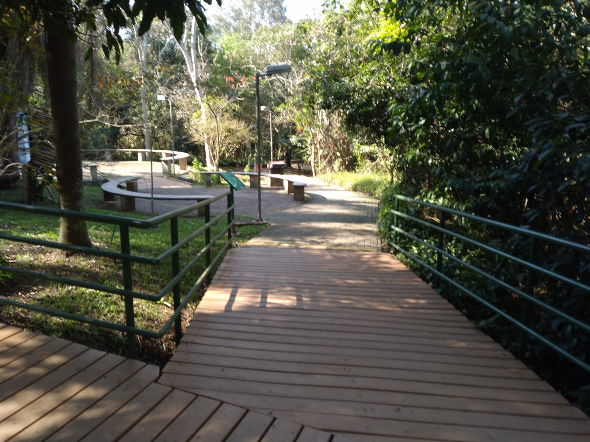
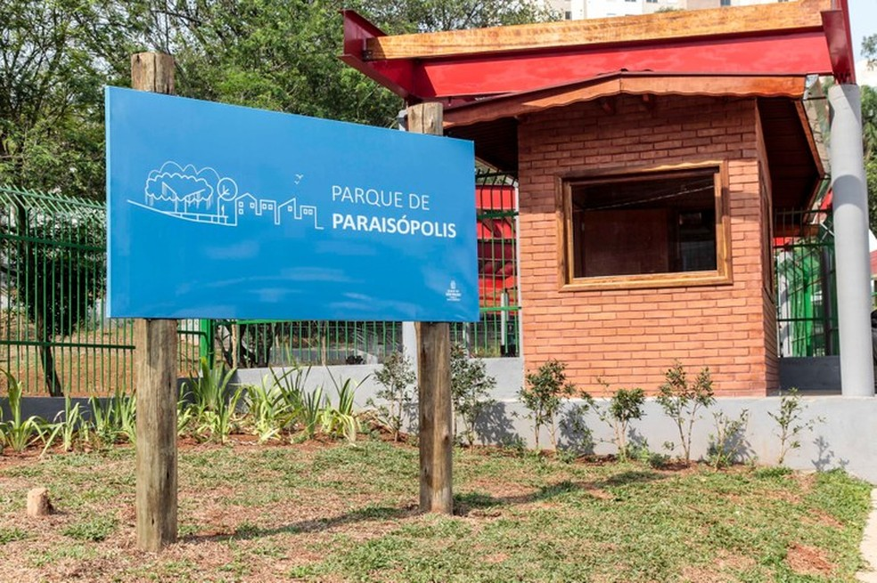

No local, os visitantes contam com playground, bicicletários, aparelhos para ginástica, academia da terceira idade, trilhas, sanitários, pontes de madeira, área de estar, entre outras áreas
Área de 23 mil m² passou a ser do poder público municipal em 2019. Totalmente acessível, conta com espécies arbóreas nativas e exóticas
Parque, que tem quase 70 mil metros quadrados de área verde, foi criado por lei de 2008, mas só começou a sair do papel em 2019.
O Jardim Botânico de São Paulo tem 360.000 m² de área destinada à visitação pública no endereço Av. Miguel Stéfano, 3031 (ver no mapa), no Bairro da Água Funda, na Zona Sul da capital. Tem várias atrações e por isso vale a pena ser visitado. É um dos 10 melhores parques de São Paulo pela classificação do site Áreas Verdes das Cidades. Jardim Botânico de São Paulo Horário de funcionamento: 9h às 17h (Terças aos Domingos e Feriados) Telefone: (11)...
Visitamos numa terça-feira, o Parque Guarapiranga, situado na avenida do mesmo nome, número 575, no Distrito de Campo Limpo, Zonal Sul de São Paulo. Ocupa uma área de 152.600 m² e fica numa das margens da Represa do Guarapiranga...
Voltamos ao Parque Burle Marx, que se situa na Av. Dona Helena Pereira de Morais, 200, Vila Andrade na Zona Sul de São Paulo, capital. Segundo seu site oficial na internet, "o parque ocupa área da antiga propriedade do empresário Baby Pignatari e seu destaque são os jardins projetados por Burle Marx, o conjunto de esculturas do painel de altos e baixos relevos e os espelhos d'água". O parque tem cerca de 108 mil...
O Parque Alfredo Volpi foi revisitado num domingo e fica na Avenida Oscar Americano, 480, no bairro do Morumbi, subprefeitura do Butantã, em São Paulo. Foi inaugurado em 27/04/1971, tendo uma superfície de 142.432 m², destacando-se por suas trilhas, inclusive em mata fechada. É o parque considerado pela Prefeitura de São Paulo como tendo a maior biodiversidade em zona urbana da capital...
Situado na Chácara Monte Alegre na Zona Sul de São Paulo, o Parque do Cordeiro ou Martin Luther King, que tem cerca de 35.000 m², é dividido em dois setores: o Oeste – com pistas de pedrisco de caminhada/corrida arborizadas, aberto ao público 03/11/2013, e o Leste, implantado desde 2007 em parceria com a Sabesp. A obra envolveu a despoluição do Córrego Alcatrazes, que passa pelo parque; a segunda etapa do parque foi desenvolvida juntamente...
O Parque Linear Invernada, visitado num domingo, fica no bairro do Campo Belo, zona sul da capital paulista e tem cerca de 4.500 m², objetivando a preservação do Córrego Invernada, que foi canalizado em 2006, e enriquecimento do bosque já existente. A administração atual é da Secretaria Municipal de Esportes e Lazer da Prefeitura de São Paulo...
O Parque Chuvisco, visitado num domingo, fica na Rua Ipiranga, 792, no bairro do Jardim Aeroporto, zona sul da capital paulista e tem cerca de 37.000 m² de área em seu total. Foi inaugurado no dia 1 de abril de 2017.
O Parque Severo Gomes, se situa na Rua Pires de Oliveira, 356, Granja Julieta no Bairro de Santo Amaro, Zona Sul de São Paulo. Sua área é de 34.900 m², tendo recebido esse nome em 30/12/199...
A visita ao Parque Jardim Herculano, que fica localizado no bairro com esse mesmo nome, pertencente à subprefeitura de M'Boi Mirim na zona sul de São Paulo, foi feita num domingo. O parque tem cerca de 76.000 m² de superfície total e está inserido numa área de preservação de mananciais, contando com grande número de nascentes que formam pequenas várzeas e córregos (fazem parte da bacia do córrego Guavirituba)...
A visita ao Parque Santo Dias, que fica localizado em Capão Redondo, que pertence à subprefeitura de Campo Limpo na zona sul de São Paulo, foi feita num domingo. O local tem cerca de 134.000 m² de área no total, tendo sido inaugurado em 7 de novembro de 1992.